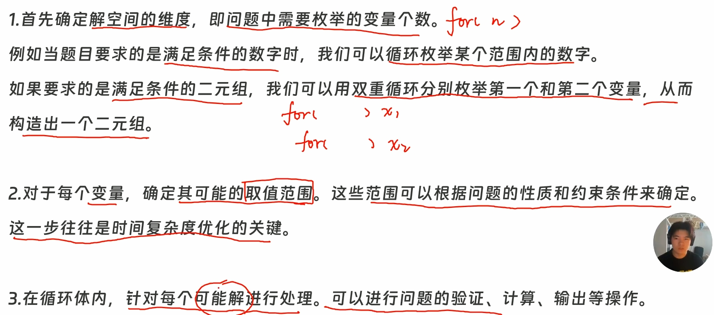

只要题目里的业务场景属于宁可溢出浪费，也绝不能少算，向上取整： 需要次数 = (总数 + 每次容量 - 1) / 每次容量
时间每隔x ,向下取整 : 原数 / x * x
处理跨天/周期性问题：只要涉及到“循环往复”（如时钟、转盘、走位），(ans % n + n) % n ；能把任何负数偏移量完美修正到合法的 [0, n-1] 区间；
先乘后除 （向下取整： 一有0 全玩完）
🎯

gcd( 最大公约数)
ll gcd(ll a, ll b) { return b == 0 ? a : gcd(b, a % b); }，那同理也可以换成减法：。
lcm(最小公倍数)
ll lcm(ll a,ll b)
{
return a / gcd(a,b) * b;
}遇到算数字和之类的 一律 long long，必须注意边界 每个变量取值 等号，能不能一样 取0；
for循环枚举找最值的时候，最后m_ans放循环外面，输出，过程量 ans则定义在循环里面打擂台；
如果只有两变量 然后求最小；可以直接枚举其中一个的情况 然后在循环里面算第二个
枚举优化 & 数位处理模板
一、 for 循环枚举终极优化指南
处理暴力搜索时，千万不要顺着题目的死脑筋去循环！
-
最大优化（剪枝）：一个数若是分成几部分求和，那么单取某一部分绝对不会大于这个数；若多层嵌套可以持续加上几部分继续放缩。
-
起点优化（防回头）：若有升序/不重复要求，内层循环的起点可以直接写上外层循环的变量（例如
for(b = a; ...)）。 -
嵌套优化（降维打击）：多重嵌套时，最后一个数可以通过已知公式推导出来，从而直接砍掉最后一层循环！
-
🔥 反向生成优化（新兵器）：当题目让你找满足 的 时，千万不要去枚举 然后拆因数！直接反向盲猜，外层枚举 ，内层枚举 ，算出来的 直接拿去过安检！效率提升百倍！
-
🔥 全局去重优化（新兵器）：反向生成时极易产生重复的 （比如不同的组合算出同一个合法的 ）。必须在全局开一个
bool vis[MAX]数组，打过勾的 直接跳过，防止ans重复加钱！
【定和降维边界法】
📡 触发条件（何时使用？）
当你看到题目中同时出现以下 3 个关键字 时：
-
找对子：求有多少对 。
-
有大小：明确规定 （或 ）。
-
有限制：知道 和 的总和 （或者是让你枚举 ），并且知道 各自的取值范围（比如 ）。
ll min_a = max(L_min, S - R_max); // 2. 砍上限：a 必须严格小于 b (即 a < S - a)
// ⚠️ 注意：如果题目允许 a 可以等于 b，这里就改成 S / 2
ll max_a = (S - 1) / 2;
// ================== 填空区 3：单线收割 ==================
if (min_a <= max_a) { // 只有当上限大于等于下限时，这个区间才是真实存在的
for (ll a = min_a; a <= max_a; ++a) { ll b = S - a; // 瞬间白嫖出 b，彻底消灭 O(N^2) 的第二层循环！
// 🎯 接下来就是具体的业务逻辑安检门：
// 比如查互素： // if (gcd(a, S) == 1) { ans++; }
// 比如算数量： // ans += ...;🧠 纯数学推导（为什么能这么卡边界？）
假设已知两数之和为 （即 ），且变量的绝对下限是 ，绝对上限是 。
-
🔪 砍上限（由 决定）：
因为 ，把 替换成 ，得到 。
移项得到 。
所以在整数域里， 最大只能取到 的一半稍微少一点，即：
max_a = (S - 1) / 2; -
🔪 卡下限（由 的最大值决定）：
虽然 本身有绝对下限 ，但如果 取得太小，会导致 被迫变得极大！
因为 ，替换得到 。
移项得到 。
所以 必须在这两者之间取最大值兜底，即：
min_a = max(L_min, S - R_max);
二、 处理数字像剥洋葱（数位分离模板）
% 10 切下最外面的一层皮，/ 10 把这层皮彻底扔掉，循环，直到洋葱彻底剥光
🧅 第一阶段：提取数位
-
🎯 适用场景：拆成独立数字判断（算数位之和、找特定数字）。
-
💻 核心动作：
反向取数
int cnt = 0; while(x > 0) { int rem = x % 10; // 1. 切洋葱皮 if(rem == 2) cnt++; // 2. 判 x /= 10; // 3. 扔皮砍位 }
正向取数
cin >> x;
string s = " "+ to_string(x);
int len = s.size() -1;
ll wd = 0;
for(int i = 1;i <= len;++i)
{
se[i] = s[i] - '0';//转成数字 ，直接正向取位；
}🚀 第二阶段 单循环 + 进度条（状态机）
-
🎯 适用场景：找“按特定顺序排列的一串子序列”（如找 2-0-2-3）。
-
💻 核心动作：因为是从右往左剥，必须倒着查！
int step = 0; // 进度条 while(x > 0) { int rem = x % 10; if(step == 0 && rem == 3) step++; // 找 3 else if(step == 1 && rem == 2) step++; // 找 2 // ... 直到凑齐拉响警报 x /= 10; }
🏆 多数字核对法
-
🎯 适用场景：题目要求判断几个数字拆开后，“出现的数字频率相同、总长度相同”（例如判断 和 拼起来是不是等于 拆开的数字）。
-
💡 核心动作：直接开一个大小为 10 的“数字桶”
bkt[10]。自己人就（+1），敌人就（-1）。最后查账，只要全是 0 就完美匹配 -
💻 进阶 C++ 模板：
// 高级安检门：判断 a 和 b 的各位数字合起来，是不是和 n 一模一样 bool check_anagram(int a, int b, int n) { // 💣 致命防爆零：账本必须每次查账时重新买新的（局部变量清零）！ int bkt[10] = {0}; int alen = 0, blen = 0, nlen = 0; // 长度校验 while(a > 0) { bkt[a % 10]++; alen++; a /= 10; } while(b > 0) { bkt[b % 10]++; blen++; b /= 10; } while(n > 0) { bkt[n % 10]--; nlen++; n /= 10; } // 3. 极速安检 if(alen + blen != nlen) return false; // 长度不对，直接枪毙 for(int i = 0; i < 10; ++i) { if(bkt[i] != 0) return false; //说明数字对不上 } return true; // 完美匹配！ }
🧠 注意事项：
-
坚决不套娃：不管题目让你找多长的数字串，永远只用一个
while(x > 0)。 -
永远切原数：砍位的永远是
x /= 10，绝对不能去切刚切下来的rem。 -
区分局部与全局：用来查账的
bkt必须放局部每次清零！用来记录历史去重的vis必须放全局一直有效！ 混淆必死循环！
✍️ 例题
//找2019特别数
#include <bits/stdc++.h>
using namespace std;
bool f(int x)
{
while(x)
{
int y = x % 10;
if (y == 2 || y == 0 || y == 1 || y == 9) return true;
x /= 10;
}
return false;
}
int ans;
int main()
{
int n;cin >> n;
for(int i = 1; i <= n; ++i)
{
if(f(i)) ans += i;
}
cout << ans << '\n';
return 0;
}P10984 [蓝桥杯 2023 国 Python A/Java A] 残缺的数字
题目描述
七段码显示器是一种常见的显示数字的电子元件，它有七个发光管组成：

上图依次展示了数字 用七段码来显示的状态，其中灯管为黄色表示点亮，灰色表示熄灭。根据灯管的亮暗状态，我们可以用一个状态码（状态码是一个 位的二进制数字）来表示一个七段码，令灯管点亮时状态为 ，灯管熄灭时状态为 ，按照灯管 的顺序标识一个七段码，则数字 的状态码为：
| 数字 | 状态码 | 数字 | 状态码 |
|---|---|---|---|
小蓝有一个喜爱的数字，长度为 位，每一位用一个七段码显示器来展示 （每位只能是 ，可以包含前导零），由于灯管故障，一些本该点亮的灯管 处于了熄灭状态。例如，对于一个长度为 的数字来说，当两个七段码对应的 状态码分别为：（高位）、（低位）时，原本的数字可能会是： 、、、，有 4 种可能的值。
个七段码显示器对应的状态码分别为：
，，，，，， ，， ，， ，， ，， ，， ，。
其中每个表示一个七段码对应的的状态码（按照数字的高位到低位给出）。请你 判断下小蓝喜爱的数字有多少种可能的值。
输入格式
无
输出格式
一行一个整数表示答案。
#include <bits/stdc++.h>
using namespace std;
using ll = long long;
string stm[10] = {"1111110","0110000","1101101","1111001","0110011","1011011","1011111","1110000","1111111","1111011"};
string q[19]={"","0000011","1001011","0000001","0100001","0101011","0110110","1111111","0010110","0101001","0010110","1011100","0100110","1010000","0010011","0001111","0101101","0110101","1101010"};
ll tans = 1;
int main()
{
ios::sync_with_stdio(0);cin.tie(0);cout.tie(0);
for(int x = 1; x <= 18;++x)
{ ll ans = 0;
for(int i = 0;i < 10;++i)
{
bool isok = true;
for(int j = 0;j < 7;++j)
{
if(q[x][j] == '1' && stm[i][j] == '0')//字符串类型扫数字要''
{
isok = false;
break;//循环嵌套 就算 break还是会往下运行，还是要引入标志；
}
}
if(isok) ans++;
}
tans *= ans;
}
cout << tans;
return 0;
}P15430 [蓝桥杯 2025 国 Python B] 等差数列计数
题目描述
等差数列是一种常见的数学数列，其任意相邻两项的差均为固定常数，称为公差。例如， 是一个公差为 的等差数列，而 不是等差数列。现在，小蓝想知道，如果从 到 的整数中选取 个不同的数，那么可以组成多少种不同的、长度为 的等差数列？两个等差数列不同当且仅当它们至少有一项不同。例如， 和 是不同的等差数列， 和 也是不同的等差数列。
输入格式
无
输出格式
这是一道结果填空题，你只需要算出结果后提交即可。本题的结果为一个整数，在提交答案时只填写这个整数，填写多余的内容将无法得分。
输入输出样例 #1
输入 #1
输出 #1
#include <bits/stdc++.h>
using namespace std;
using ll = long long;
ll ans;
int main()
{
ios::sync_with_stdio(0);cin.tie(0);cout.tie(0);
for(ll i = 1; i <= 2025;++i)
{
for(ll j = 1; j <= 2025;++j)
{
if (i==j) continue;
ll k = 2*j-i;
if(k >= 1 && k<=2025) ans++;
}
}
cout << ans <<'\n';
return 0;
}P12377 [蓝桥杯 2023 省 Python B] 2023
题目描述
请求出在 （含）至 （含）中，有多少个数中完全不包含 。
完全不包含 是指无论将这个数的哪些数位移除都不能得到 。
例如 ， 都完全不包含 ，而 ， 则含有 （后者取第 个数位）。
输入格式
无
输出格式
这是一道结果填空的题，你只需要算出结果后提交即可。本题的结果为一个整数，在提交答案时只需要编写一个程序输出这个整数，输出多余的内容将无法得分。
#include <bits/stdc++.h>
using namespace std;
using ll = long long;
ll ans;
bool ns(int x)
{
int step = 0;
while(x > 0)
{
int r1 = x % 10;
if(step == 0 && r1 == 3) step++;
if(step == 1 && r1 == 2) step++;
if(step == 2 && r1 == 0) step++;
if(step == 3 && r1 == 2) return true;
x/=10;
}
return false;
}
int main()
{
ios::sync_with_stdio(0);cin.tie(0);cout.tie(0);
for(int i = 12345678 ;i <= 98765432;++i)
{
if(!ns(i)) ans ++;
}
cout << ans;
return 0;
}P12243 [蓝桥杯 2023 国研究生组] 混乘数字
题目描述
混乘数字的定义如下: 对于一个正整数 ，如果存在正整数 ，使得 ，而且 和 的十进制数位中每个数字出现的次数之和与 中对应数字出现次数相同，则称 为混乘数字。
例如，对于正整数 ，存在 满足条件，因此 是一个混乘数字。
又如，对于正整数 ，存在 满足条件，因此 是一个混乘数字。
请你帮助计算出， (含)之间一共有多少个数字是混乘数字。
输入格式
无
输出格式
这是一道结果填空的题，你只需要算出结果后提交即可。本题的结果为一个整数，在提交答案时只需要编写一个程序输出这个整数，输出多余的内容将无法得分。
#include <bits/stdc++.h>
using namespace std;
using ll = long long;
ll ans;
bool si[1000009];
bool check(int a,int b,int n)
{
int bkt[11] = {0};
int alen = 0,blen = 0,nlen = 0;
while(a > 0)
{
int rem = a % 10;
bkt[rem]++;//统计各位 所以是0~9
alen++;
a /= 10;
}
while(b > 0)
{
int rem = b % 10;
bkt[rem]++;
blen++;
b /= 10;
}
while(n > 0)
{
int rem = n % 10;
bkt[rem]--;//这样就可以让每个数字对上；
nlen++;
n /= 10;
}
if(alen + blen != nlen) return false;
for(int i = 0;i < 10;++i)
{
if(bkt[i] != 0) return false;//不是加减相等 方便差出现频率是否相等
}
return true;
}
int main()
{
ios::sync_with_stdio(0);cin.tie(0);cout.tie(0);
for(ll a = 1;a <= 1000;++a) //这样优化
{
for(ll b = a;a *b <=1e6;++b)
{
ll n = a*b; //去重
if(check(a,b,n))
{
if(!si[n])
{
si[n] = true ;
ans++;
}
}
}
}
cout << ans <<'\n';
return 0;
}P12378 [蓝桥杯 2023 省 Python B] 硬币兑换
题目描述
小蓝手中有 种不同面值的硬币，这些硬币全部是新版硬币，其中第 种硬币的面值为 ，数量也为 个。硬币兑换机可以进行硬币兑换，兑换规则为：交给硬币兑换机两个新版硬币 和 ，硬币兑换机会兑换成一个面值为 的旧版硬币。
小蓝可以用自己已有的硬币进行任意次数兑换，假设最终小蓝手中有 种不同面值的硬币（只看面值，不看新旧）并且第 种硬币的个数为 。小蓝想要使得 的值达到最大，请你帮他计算这个值最大是多少。
注意硬币兑换机只接受新版硬币进行兑换，并且兑换出的硬币全部是旧版硬币。
输入格式
无
输出格式
这是一道结果填空的题，你只需要算出结果后提交即可。本题的结果为一个整数，在提交答案时只需要编写一个程序输出这个整数，输出多余的内容将无法得分。
#include <bits/stdc++.h>
using namespace std;
using ll = long long;
ll maxans = -1;
int main()
{
ios::sync_with_stdio(0);cin.tie(0);cout.tie(0);
for(int s = 1;s <= 4046;++s )
{
ll ans = 0;//所有可能都有一个 所以 在里面
if(s <= 2023)
{
ans += s;
}
int min_a = max(1,s-2023);
int max_a = (s-1) / 2;
for(int a = min_a; a <= max_a;++a )
{
ans += a;
}
if(s%2 == 0)
{
int c = s/2;
if(c <= 2023)
{
ans += c/2;
}
}
maxans = max(maxans,ans); //打擂台的值一个在循环里面
}
cout << maxans <<'\n';
return 0;
}
}P15432 [蓝桥杯 2025 国 Python B] 修改密码
题目描述
小蓝是蓝桥云课的忠实用户，他在平台上注册了 个账号，每个账号的密码都是一串仅由大小写字母、数字构成的字符串。最近，蓝桥云课为了提升账户安全性，强制要求所有用户修改密码以符合新的安全策略：密码必须至少包含一个小写字母、一个大写字母和一个数字。
小蓝不想大幅修改他常用的密码，因为他已经非常习惯了。于是，他打算进行一些简单的替换操作来修改密码，以尽可能保留原密码的结构。具体来说，每次操作，他可以将密码中的大写字母 O、小写字母 o 和数字 0 做一次互相替换，即一次操作可以是以下操作之一：
- 将其中的一个大写字母 O 改成小写字母 o；
- 将其中的一个大写字母 O 改成数字 0；
- 将其中的一个小写字母 o 改成大写字母 O；
- 将其中的一个小写字母 o 改成数字 0；
- 将其中的一个数字 0 改成大写字母 O；
- 将其中的一个数字 0 改成小写字母 o。
现在，小蓝希望你帮助他计算每个账号的密码至少需要多少次替换操作才能符合新的安全策略。如果无论如何替换都无法满足新策略，则输出 ，表示该密码无法通过替换操作变得有效。
输入格式
输入的第一行包含一个整数 ，表示小蓝的账号数量。
接下来 行，每行包含一个仅由大小英文字母、数字构成的字符串 ，表示一个密码。
输出格式
输出 行，每行包含一个整数，表示修改对应密码所需的最小操作次数。如果无法满足新策略，则输出 。
输入输出样例 #1
输入 #1
3
zxcvbn12
oooooooo
123abcABC
输出 #1
-1
2
0
说明/提示
评测用例规模与约定
对于所有评测用例，，，其中 表示字符串 的长度。
#include <bits/stdc++.h>
using namespace std;
using ll = long long;
int main()
{
ios::sync_with_stdio(0);cin.tie(0);cout.tie(0);
int n;
cin >> n;
while(n--)
{
string s;
cin >> s;
int U = 0,L = 0,D = 0;
int Oc = 0,oc = 0,dc = 0;
for(auto v : s)
{
if(isupper(v))
{
U++;
if(v=='O') Oc++;
}
else if(islower(v))
{
L++;
if(v=='o') oc++;
}
else if(isdigit(v))
{
D++;
if(v=='0') dc++;
}
}
int K = dc + Oc + oc;
int fix_U = U - Oc;
int fix_L = L - oc;
int fix_D = D - dc;
int mcost = 1e8;
for(int i = 0;i <= K;++i) //枚举修改后密码状态 即修改后密码有 i个O,j个o,k个0；所以可以为0
{
for(int j = 0;j <= K - i;++j)
{
int k = K - j - i;
if(fix_U + i >= 1 && fix_L + j >= 1 && fix_D + k >= 1)
{
int kept = min(i,Oc) + min(j,oc) + min(k,dc); //保留的数量最小值 因为大了要修改变动；
int cost = K - kept;
mcost = min(cost,mcost);
}
}
}
cout << (mcost == 1e8 ? -1 : mcost) << '\n';
}
return 0;
}P12869 [蓝桥杯 2025 国 Python A] 特殊整数对的数量
题目描述
我们称一对正整数 是 “特别互素对”，如果满足以下条件：
- 。
- 与 互素，即 和 的最大公约数为 。
- 是 的倍数。
请计算一共有多少对 是 “特别互素对”。
输入格式
无
输出格式
这是一道结果填空的题，你只需要算出结果后提交即可。本题的结果为一个数字，在提交答案时只填写这个数字，填写多余的内容将无法得分。
#include <bits/stdc++.h>
using namespace std;
using ll = long long;
ll ans;
ll gcd (int a,int b)
{
return b == 0 ? a : gcd(b,a%b);
}
int main()
{
ios::sync_with_stdio(0);cin.tie(0);cout.tie(0);
ll maxlimit = 1e6;
for(ll s = 2025;s <= 2 * maxlimit;s += 2025) //和不是定值 要枚举
{
ll min_a = max(1ll,s - maxlimit);
ll max_a = (s-1) / 2;
for(ll a = min_a;a <= max_a;++a)
{
if(gcd(a,s) == 1) //数学变换
ans++;
}
}
cout << ans <<'\n';
return 0;
}P10424 [蓝桥杯 2024 省 B] 好数
题目描述
一个整数如果按从低位到高位的顺序，奇数位（个位、百位、万位……）上的数字是奇数，偶数位（十位、千位、十万位……）上的数字是偶数，我们就称之为“好数”。
给定一个正整数 ，请计算从 到 一共有多少个好数。
输入格式
一个整数 。
输出格式
一个整数代表答案。
输入输出样例 #1
输入 #1
24
输出 #1
7
输入输出样例 #2
输入 #2
2024
输出 #2
150
说明/提示
样例 1 解释
以内的好数有 ，一共 个。
数据规模与约定
- 对于 的测试数据，。
- 对于全部的测试数据，。
#include <bits/stdc++.h>
using namespace std;
using ll = long long;
int n;
ll ans;
bool check(int x)
{
bool sign = false;//状态切换 必须要放里面 ，全局会留上一次状态，必须进入一个数check一次初始化一次；
while(x > 0)
{
sign = !sign; //奇偶切换；
int rem = x % 10;
if(sign==true)
{
if( rem % 2 == 0) return false;
}
else
{
if( rem % 2 == 1) return false;
}
x /= 10;
}
return true;
}
int main()
{
ios::sync_with_stdio(0);cin.tie(0);cout.tie(0);
cin >> n;
for(int i = 1;i <= n;++i)
{
if(check(i)) ans++;
}
cout << ans <<'\n';
return 0;
}小红杀怪
链接：https://ac.nowcoder.com/acm/contest/90960/D
来源：牛客网
-
时间限制：C/C++/Rust/Pascal 1秒，其他语言2秒
-
空间限制：C/C++/Rust/Pascal 256 M，其他语言512 M
-
64bit IO Format:
%lld
题目描述
小红在一个游戏里杀怪。这是个回合制游戏，小红和两只怪物相遇了。
第一只怪物有 血量，第二只怪物有 血量。
小红有两个技能：
-
第一个技能叫火球术，效果是对单体怪物造成 伤害。
-
第二个技能叫烈焰风暴，效果是对每只怪物造成 伤害。
小红想知道，自己最少使用多少次技能，可以击杀这两只怪物？（当怪物血量小于等于0时，视为被击杀）
输入描述
四个正整数 ，用空格隔开。
输出描述
小红使用技能的最少次数。
示例 1
输入
Plaintext
5 2 3 1
输出
Plaintext
3
#include <bits/stdc++.h>
using namespace std;
using ll = long long;
bool u1;
int ans = 9999;
int main()
{
ios::sync_with_stdio(0);cin.tie(0);cout.tie(0);
int a,b,x,y;cin >> a >> b >> x >> y;
for(int i = 0; i <= 20;++i)//可以一次不放 根据情况来；
{
int rem_a = max(0,a - i*y);
int rem_b = max(0,b - i*y);
int x_a = (rem_a == 0 ? 0 : (rem_a + x - 1) / x);
int x_b = (rem_b == 0 ? 0 : (rem_b + x - 1) / x);
ans = min(ans,i+ x_a + x_b);
}
cout << ans <<'\n';
return 0;
}[[#只要题目里的业务场景属于宁可溢出浪费也绝不能少算向上取整-需要次数—总数—每次容量---1—每次容量|只要题目里的业务场景属于宁可溢出浪费，也绝不能少算，向上取整： 需要次数 = (总数 + 每次容量 - 1) / 每次容量]]
P10387 [蓝桥杯 2024 省 A] 训练士兵
题目描述
在蓝桥王国中，有 名士兵，这些士兵需要接受一系列特殊的训练，以提升他们的战斗技能。对于第 名士兵来说，进行一次训练所需的成本为 枚金币，而要想成为顶尖战士，他至少需要进行 次训练。
为了确保训练的高效性，王国推出了一种组团训练的方案。该方案包含每位士兵所需的一次训练，且总共只需支付 枚金币（组团训练方案可以多次购买，即士兵可以进行多次组团训练）。
作为训练指挥官，请你计算出最少需要花费多少金币，才能使得所有的士兵都成为顶尖战士？
输入格式
输入的第一行包含两个整数 和 ，用一个空格分隔，表示士兵的数量和进行一次组团训练所需的金币数。
接下来的 行，每行包含两个整数 和 ，用一个空格分隔，表示第 名士兵进行一次训练的金币成本和要成为顶尖战士所需的训练次数。
输出格式
输出一行包含一个整数，表示使所有士兵成为顶尖战士所需的最少金币数。
输入输出样例 #1
输入 #1
3 6
5 2
2 4
3 2
输出 #1
16
说明/提示
花费金币最少的训练方式为：进行 次组团训练，花费 枚金币，此时士兵 已成为顶尖战士；再花费 枚金币，让士兵 进行两次训练，成为顶尖战士。总花费为 。
对于 的评测用例，。
对于所有评测用例，。
暴力解：40
#include <bits/stdc++.h>
using namespace std;
using ll = long long;
const int N = 1e6+9;
ll p[N],c[N];
int main()
{
ios::sync_with_stdio(0);cin.tie(0);cout.tie(0);
ll n,s;cin >> n >> s;
ll maxsb = 0;
ll min_sum = 2e18;
for(int i = 1;i <=n;++i)
{
cin >> p[i] >> c[i];
maxsb = max(c[i],maxsb);//找到集体训练最大值；
}
ll sum = 0;
for(ll i = 0;i <= maxsb;++i) //i : 集体训练次数 ，注意可以为0；
{
sum = i * s; //每回的首先第一次 ，所以不能累加
for(ll j = 1;j <= n;++j)//每位士兵的
{
if(c[j] > i)
{
sum += (c[j]-i)*p[j]; //花费等于训练次数成训练成本；每位士兵 所以累加
}
}
min_sum = min(min_sum,sum);
}
cout << min_sum <<'\n';
return 0;
}
前后缀和 正解：
#include <bits/stdc++.h>
using namespace std;
using ll = long long;
const int N = 1e6+9;
ll sum_c[N];
ll suf[N];
ll ans = 0;
int main()
{
ios::sync_with_stdio(0);cin.tie(0);cout.tie(0);
ll n,s;cin >> n >> s;
ll p,c;ll max_c = 0;ll min_sum = 2e18;
for(int i = 1;i <= n;++i)
{
cin >> p >> c;
sum_c[c] += p;
max_c = max(c,max_c);
}
for(int i = max_c;i >= 1;--i)
{
suf[i] = suf[i+1] + sum_c[i];
}
for(int i = 0;i <= max_c;++i)
{
ans += min(s,suf[i]);
}
cout << ans <<'\n';
return 0;
}P10429 [蓝桥杯 2024 省 B] 拔河
题目描述
小明是学校里的一名老师，他带的班级共有 名同学，第 名同学力量值为 。在闲暇之余，小明决定在班级里组织一场拔河比赛。
为了保证比赛的双方实力尽可能相近，需要在这 名同学中挑选出两个队伍，队伍内的同学编号连续 和 ，其中 。
两个队伍的人数不必相同，但是需要让队伍内的同学们的力量值之和尽可能相近。请计算出力量值之和差距最小的挑选队伍的方式。
输入格式
输入共两行。
第一行为一个正整数 。
第二行为 个正整数 。
输出格式
输出共一行，一个非负整数，表示两个队伍力量值之和的最小差距。
输入输出样例 #1
输入 #1
5
10 9 8 12 14
输出 #1
1
说明/提示
样例 1 解释
其中一种最优选择方式：
队伍 ：，队伍 ：，力量值和分别为 ，，差距为 。
数据规模与约定
- 对 的数据，。
- 对全部的测试数据，保证 ，。
暴力 20：
#include <bits/stdc++.h>
using namespace std;
using ll = long long;
const int N = 1e3+9;
ll a[N],pre[N];
ll min_diff = 9e18;
int main()
{
ios::sync_with_stdio(0);cin.tie(0);cout.tie(0);
int n;cin >> n;
for(int i = 1;i <= n;++i)
{
cin >> a[i];
pre[i] = pre[i-1] + a[i];
}
for(ll l1 = 1;l1 <= n;++l1)
{
for(ll r1 = l1;r1 <= n;++r1)
{
for(ll l2 = l1+1;l2 <= n;++l2)
{
for(ll r2 = l2;r2 <= n;++r2)
{
ll sum1 = pre[r1] - pre[l1-1];
ll sum2 = pre[r2] - pre[l2-1];
ll diff = abs(sum1 - sum2);
min_diff = min(diff,min_diff);
}
}
}
}
cout << min_diff <<'\n';
return 0;
}